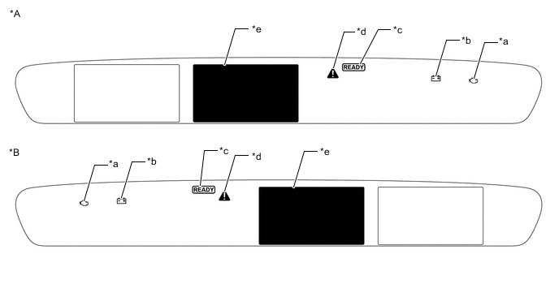

DESCRIPTION
The battery ECU assembly has a self-diagnosis system. If the computer, hybrid control system, or a component is not working properly, the ECU records the conditions that relate to the fault. The ECU also illuminates the master warning light in the combination meter assembly and provides other appropriate messages on the multi-information display, such as the HV system warning message, HV battery warning message, or discharge warning message.

| *A | for LHD | *B | for RHD |
| *a | MIL | *b | Charge Warning Light |
| *c | READY Light | *d | Master Warning Light |
| *e | Multi-information Display | - | - |
Tech Tips
The master warning light will illuminate when the hybrid control system is malfunctioning and the light will blink when in inspection mode.
2 TRIP DETECTION LOGIC
Following is the description for storage of DTC using "2 trip detection logic".
When a malfunction is first detected, the malfunction is temporarily stored in the battery ECU assembly memory (1st trip). If the same malfunction is detected during the next drive cycle, the MIL is illuminated (2nd trip).
FREEZE FRAME DATA
The battery ECU assembly records vehicle and driving condition information as freeze frame data the moment a DTC is stored. When troubleshooting, freeze frame data can be helpful in determining whether the vehicle was moving or stationary, whether the engine was warmed up or not, as well as other data recorded at the time of a malfunction.
AUXILIARY BATTERY VOLTAGE
If voltage is below 11 V, replace or recharge the auxiliary battery.
Note
After turning the power switch off, waiting time may be required before disconnecting the cable from the negative (-) auxiliary battery terminal. Therefore, make sure to read the disconnecting the cable from the negative (-) auxiliary battery terminal notices before proceeding with work.
MIL (Malfunction Indicator Lamp)
The MIL is illuminated when the power switch is first turned on (IG), before the READY light comes on.
When the READY indicator turns on, the MIL should turn off. If the MIL remains illuminated, the diagnosis system has detected a malfunction or abnormality in the system.
Tech Tips
If the MIL is not illuminated when the power switch is first turned on (IG), check the MIL circuit.
for SFI System: Click here